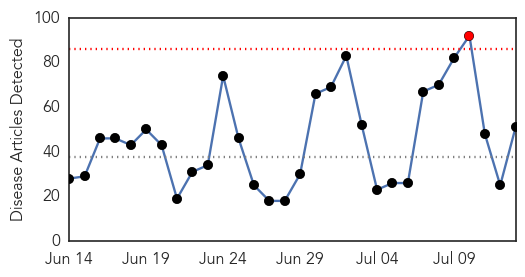
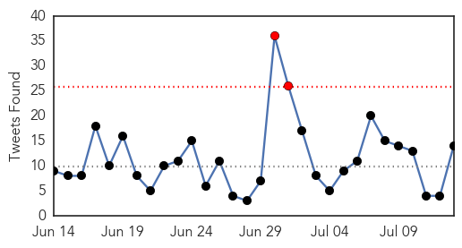
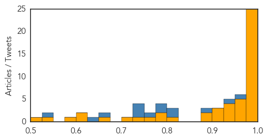
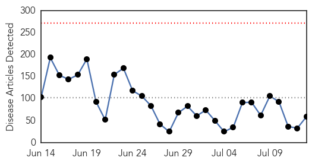
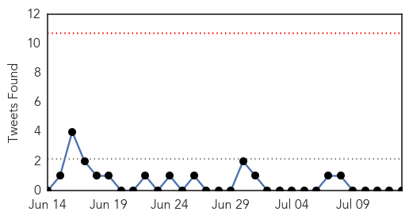

Ebola
30-Day Web Trend
1 alerts, 0 warnings

30-Day Twitter Trend
2 alerts, 0 warnings

Article Locations


Article Confidences
Top Articles:
- 1.000
- D.C. patient tests negative for Ebola
- 1.000
- UN: Africa's Ebola Outbreak Has Not Run Its Course
- 0.999
- UN envoy: Africa’s Ebola outbreak still considered a ‘major, major outbreak’
- 0.999
- Ebola Outbreak Is Not Yet Contained as 30 New Cases are Reported Each Week
- 0.999
- Africa's Ebola Outbreak Has Not Run Its Course
- 0.999
- Africa's Ebola outbreak has not run its course - UN envoy
- 0.999
- Ebola toll hits 2,400 as Cuba pledges medics
- 0.999
- UN says #Ebola outbreak 'not yet finished'
- 0.999
- CDC Steps Up Ebola Risk Management, Names Expert Team for Hospitals
- 0.998
- Liberia confirms five fresh cases of Ebola
- 0.998
- Ebola infection rate still significant, UN official warns
- 0.998
- The Road to Zero: Ebola One Year Report
- 0.998
- Africa's Ebola outbreak not yet run its course
- 0.998
- Ebola-hit countries appeal for $3.2 billion to rebuild
- 0.997
- Africa’s Ebola outbreak has not run its course – UN envoy
- 0.996
- Ebola is Not Finished With West Africa
- 0.995
- Parliament: 62 suspected cases of Mers investigated in Singapore, all tested negative, Health News & Top Stories
- 0.995
- US Experts Head To West Africa
- 0.993
- Ebola outbreak in Africa is all but over – Says UN Envoy
- 0.993
- Ebola-hit countries appeal for $3.2 billion to rebuild
- 0.990
- Ebola Outbreak Update: 2 New Cases In Liberia, Where Virus – UK Progressive
- 0.988
- UN says Ebola outbreak 'not yet finished'
- 0.982
- Researchers develop aerosolized vaccine that protects primates against Ebola
- 0.981
- 62 suspected Mers cases tested negative, Politics News & Top Stories
- 0.978
- The World Health Organization to accelerate national and global health security - World
- 0.971
- Ebola patients' escape spreads alarm in Sierra Leone
- 0.969
- Azerbaijan to issue money to Ebola-affected countries
- 0.961
- Ebola-hit countries get pledges of $3.4 billion to rebuild
- 0.955
- US Health Worker Arrives in Nebraska for Ebola Evaluation
- 0.952
- Ebola-affected Countries Gets $266m Aids From US
- 0.944
- Expert panel slams WHO's poor showing against Ebola
- 0.935
- President returns from New York
- 0.935
- UNDP Donates To Quarantined Families in New Ebola Affected Area
- 0.935
- President back home
- 0.922
- Thirty people a week are infected with Ebola as donors pledge more than five billion dollars
- 0.918
- Ebola recovery push nets $5 billion in pledges
- 0.907
- Ebola: Sea Fever in Port Loko
- 0.899
- Latest pandemic resource and best practice plans launched
- 0.877
- Pledges of $3.4 billion for Ebola recovery made at United Nations
- 0.817
- UNICEF Guinea Ebola Situation Report, 8 July 2015 - Guinea
- 0.789
- Divided Shawnee County Commission accepts $54,170 in 'Ebola Supplemental Funding'
- 0.778
- Address by His Excellency Dr. Ernest Bai Koroma President of the Republic of Sierra Leone to the Ebola Recovery Pledging Conference United Nations
- 0.760
- International community pledges more than five billion dollars to help recovery of Ebola-affected countries
- 0.726
- Britain will stay the course in Sierra Leone until Ebola is defeated
- 0.706
- Why capacity building needs to smarten up
- 0.663
- Soroptimist International Boosts Health Ministry
- 0.618
- As Ebola resurfaces, Liberia focuses on staying at zero cases - Liberia
- 0.607
- Experts call for more spending on global health aids
- 0.598
- Study Finds Donor Funds Fall Short for Key Global Health Functions
- 0.530
- A 'coming tsunami' of deadly non-communicable diseases could hit Africa as it gets richer
Showing top 50 articles...
Top Tweets:
- 0.955
- Ebola Update: 27600 confirmed probable & suspected cases reported in 3 most affected countries with 11253 deaths. EbolaResponse
- 0.941
- Ebola outbreak: Surprise cases a big concern - Health24 http://t.co/Gj4QS3ipFU ebola EVD
- 0.881
- Ebola patients' escape in Sierra Leone spreads alarm - Yahoo News http://t.co/c1GpQ1b5hc ebola EVD
- 0.819
- Africa's Ebola outbreak not yet run its course: UN envoy - Economic Times http://t.co/oxtv2IrcD5 ebola EVD
- 0.817
- Inhaled Ebola Vaccine Stops Virus in Monkeys Study Finds - New York Times http://t.co/caUsvuOSgx ebola EVD
- 0.786
- Africa's Ebola outbreak still isn't over - Business Insider http://t.co/6ba91m3sFe ebola EVD
- 0.781
- UN envoy says Africa's Ebola outbreak not yet run its course - Fox News http://t.co/BNzCn5ofCQ ebola EVD
- 0.761
- Global aid 'falls short' against Ebola and other health crises - Medical News Today http://t.co/p6PSxOIYTT ebola EVD
- 0.749
- Toward an Ebola Vaccine You Can Inhale - Newsweek http://t.co/3QGEEjgxcs ebola EVD
- 0.744
- Researchers Develop Aerosolized Vaccine That Protects Against Ebola in ... - Infection Control Today http://t.co/E2MqBW2aJ7 ebola EVD
- 0.737
- Researchers develop aerosolized vaccine that protects primates against Ebola - Medical Xpress http://t.co/zGiFCrMxJ4 ebola EVD
- 0.663
- RT: Oh no! An Ebola case found in Liberia (now = 6 since epidemic "ended"). Female. Near capital city. Frm Liberian MOH h…
- 0.632
- Needle-free Ebola vaccine shows promise in animal tests - Yahoo News http://t.co/pYc2AuyLIl ebola EVD
- 0.543
- Ebola-affected Countries Gets $266m Aids From US - Leadership Newspapers http://t.co/H6q7WtC2gz ebola EVD
Unknown
30-Day Web Trend
0 alerts, 0 warnings

30-Day Twitter Trend
0 alerts, 0 warnings

Article Locations


Article Confidences

Top Articles:
- 0.996
- Foreigner with MERS in Philippines now free of the virus
- 0.992
- Govt gears up to battle disease
- 0.979
- Korean cardinal praises medics’ courage in face of Mers outbreak
- 0.967
- A 'hidden epidemic' in the US has ballooned into a public-health fiasco — and no solutions are in sight
- 0.967
- Bird flu is back and experts want a 50km zone across the whole North West to prevent it spreading
- 0.950
- More reasons to watch for ticks
- 0.942
- Camden GP calls for people to get flu shots
- 0.935
- Culling at UK farm after 'highly pathogenic' bird flu case confirmed
- 0.934
- High Plains Journal: Jennifer Carrico
- 0.932
- Culling at farm after bird flu case
- 0.917
- Chicago Tribune
- 0.917
- Chicago Tribune
- 0.917
- Chicago Tribune
- 0.917
- Chicago Tribune
- 0.917
- Chicago Tribune
- 0.917
- Chicago Tribune
- 0.917
- Chicago Tribune
- 0.917
- Chicago Tribune
- 0.917
- Chicago Tribune
- 0.917
- Chicago Tribune
- 0.917
- Chicago Tribune
- 0.917
- Chicago Tribune
- 0.917
- Chicago Tribune
- 0.917
- Chicago Tribune
- 0.917
- Chicago Tribune
- 0.917
- Chicago Tribune
- 0.917
- Chicago Tribune
- 0.917
- Chicago Tribune
- 0.917
- Chicago Tribune
- 0.917
- Chicago Tribune
- 0.898
- Divide the health and welfare dept.-INSIDE Korea JoongAng Daily
- 0.857
- 170,000 chickens culled to stop bird flu outbreak
- 0.840
- CALIFORNIA children attacked by COYOTES in four separate incidents ~ MASSACHUSETTS woman is one of the first to be diagnosed with MIYAMOTOI ~ TEXAS confirms first human HANTAVIRUS case of 2015 ~ What
- 0.823
- Bird Flu Confirmed At Farm In Lancashire: A History Of The Disease In The UK
- 0.820
- South Korea's MERS crisis may come to an end next month
- 0.783
- Thailand’s Deep South steps up prevention against MERS
- 0.778
- Warmer temperatures spread malaria into higher elevations, study finds -
- 0.754
- TB test results from New Mexico announced
- 0.747
- Two die of JE in Siliguri
- 0.738
- Deadly bee disease crippling bee-farming industry
- 0.731
- State unveils plan to promote vaccinations against HPV
- 0.730
- Avian Influenza case confirmed as H7N7
- 0.717
- Bladder cancer in Nigeria: Why snails matter (1)
- 0.703
- Sierra Leone: IOM Sierra Leone Ebola Response Situation Report Issue 32
- 0.695
- EU koploper bij inzet van middelen voor duurzame ontwikkeling
- 0.693
- Countries, beware: Climbing up the income ladder can seriously damage your health!
- 0.645
- Philippines food poisoning cases spark calls for expert panel
- 0.614
- Opinion I feel a bit sick, should I stay home or go to work?
- 0.614
- Elective Surgery Is Associated with Lower Risk of Death than Drugs for Ulcerative Colitis Treatment
- 0.597
- Iran says bird flu contained
Showing top 50 articles...
Top Tweets:
-
No tweets found for Jul 13, 2015